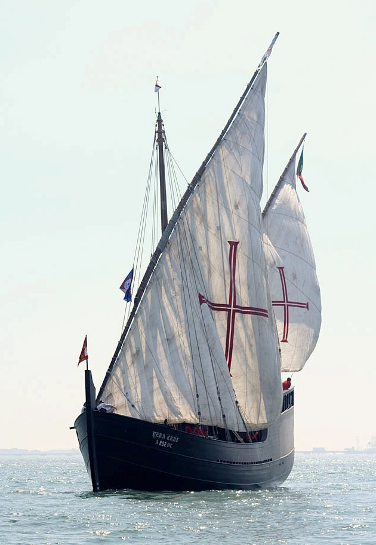
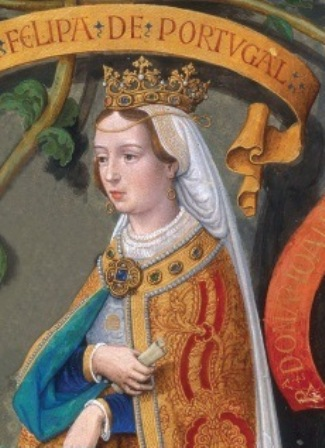

Португальские каравеллы: предыстория
Кто, поглядев в небеса,
Или ветр послушав,
Иль брызги
Острой воды ощутив на ладони, –
Скажет:
Который
Век проплывает,
Какое
Несет нас в просторы судно,
Арго ль хищник,
Хирама ли мирный корабль,
Каравелла ль
Старца Колумба?..
Сладко
Слышать твой шепот, Вечность!
Г. А. Шенгели. «В звездный вечер помчались...» (1920)
Начав писать о каравеллах, мы рискуем утонуть в этой теме и никогда уже не вернуться на столь любезные нам галеры. Но и миновать их нельзя – они были неотъемлемым элементом морского пейзажа эпохи. Так что попробуем пройти эту тему осторожно, не растекаясь мыслью по древу, но и не упустив ничего для нас важного.

Каравелла Vera Cruz в устье реки Тахо. Фото Lopo Pizarro.
Сначала зададим себе пару вопросов. Почему португальская каравелла? И были ли португальцы законодателями корабельной моды XV-XVI вв.?
«Новая Кембриджская история Индии» Пирсона (I,1, стр.9) так характеризует морские качества жителей Португалии того времени:
«Большая часть населения Португалии – это крестьяне, ничего не знавшие о море и экономически не связанные с ним. О квалификации португальских мореходов в начале эпохи Великих географических открытий можно судить по тому, с какими трудностями встретился их флот, направившийся для захвата Сеуты в 1415 году, уже при пересечении Гибралтарского пролива. Но скоро все изменилось; поругальцы, опытным путем совершенствуя конструкцию кораблей и технику мореходства, все дальше и дальше продвигались в неизведанные южные моря.»
В начале реальной истории португальского мореходства обычно ставят сына короля Жуана I, инфанта Генриха (Энрике), прозванного Мореплавателем. Вместе со своим отцом и братьями в 1415 году он направился на захват Сеуты, оплота мавров на северофриканском побережье. В книге Р.Бизли «Принц Генрих Мореплаватель» (C. Raymond Beazley, Prince Henry the Navigator. The Hero of Portugal and of Modern Discovery. 1394-1460 A.D.) это событие символически соединено с обстоятельствами смерти матери инфанта, королевы Филиппы.

Королева Португалии Филиппа Ланкастерская. Скан обложки книги Manuela Santos Silva A Rainha Ingleza de Portugal
В 1415 году в возрасте 53 лет королеву поразила неизлечимая болезнь. В последний час Филиппы её разбудил шум сильного ветра. Она спросила, откуда он дует. Услышав, что с севера, умирающая королева сказала своим сыновьям: «Это ветер для вашего путешествия, которое должно начаться в день святого Иакова» после чего скончалась без страданий с улыбкой на лице. На день св. Иакова, 25 июля, было назначено отплытие флота в Сеуту.
В намеченный день португальский флот в составе «33 галер, 27 трирем, 32 бирем и 120 пиннас и других транспортных судов», на борту которых находилось 30 тысяч моряков и 50 тысяч солдат, вышел из устья реки Тахо, но лишь 10 августа, и лишь небольшие гребные суда смогли достичь побережья Северной Африки. Крупные корабли из-за сильного встречного ветра вынуждены были вернуться в Малагу. Только 15 августа армада отплыла, наконец, к Сеуте.
Город был взят, но осадок, как говорится, остался. Португальцы поняли, что нельзя полагаться на оснащенные прямыми парусами суда при плавании на юг, и особенно при возвращении в Португалию. Началася активный поиск нового парусного вооружения, новых кораблей, «пригодных для открытия новых земель» («buenas para descubrir tierras»), которые сделали бы плавание на юг и возвращение домой предсказуемым и безопасным. Так родилась каравелла.
Конечно, такое изложение событий допустимо лишь для популярного рассказа о начале эры Великих географических открытий. На самом деле все было сложнее, эволюция корабля шла извилистым путем, с тупиковыми ветками и возвратом к исходным позициям. Именно изучению этой эволюции мы посвятим следующий пост.